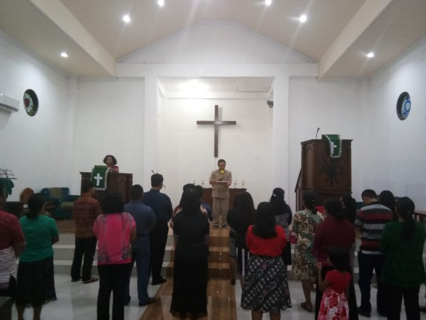
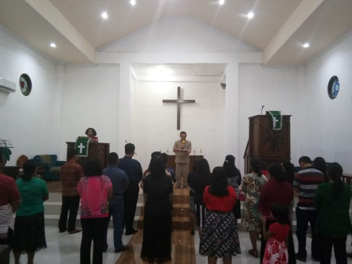

(Kejadian 17:15-27)
Syalom, selamat bersua kembali di hari minggu yang indah ini !
Setelah membaca nats ini, mungkin anda sama seperti saya berfikir. Apa hubungan nats ini dengan thema topik minggu kita hari ini yang menekankan indahnya kebersamaan . Apa mungkin bila ada dari antara kita yang masih ingat nats minggu yang lalu yang berisikan Mazmurt 133 yang menekankan indanhya kebersamaan, tidak salah juga kalau berfikir kalau topic ini salah tempat. Itulah pikiran manusia. Tetapi mari malihat nats ini berkaca dari perjalan iman anak pilihan Allah (Abraham) yang juga sama seperti anda dan saya yang juga mengalami pasang surut iman yang sering berbenturan dengan pikiran prakmatisme. Tetapi saudaraku, mari melihat topic dan penekanan nats ini dengan mengandalkan logika kita tetapi berkaca dari rancangan Allah.
Jika kita runut ke pasal 12, natas ini merupakan penampakan yang ketiga kalinya. Pada usia 75 tahun Allah memanggil dan menampakkan diri kepada Abraham (12:4). dPada pasal 15, Allah juga menyatakan diriNya menyatakan diriNya kepada Abraham untuk yyang keduakalinya . Allah mengingatkan janjiNya tentang keturunan pada saat usia Abraham 86 tahun. Pada saat itulah Ismael lahir, tetapi itu bukan anak perjanjian tetapi konspirasi karena kegelisahan Sarai dalam kecemasan penantianya yang seolah tidak terealisasi mengggerakkan untuk menggunakan logikanya agar apa yang dijanjikan Allah itu terealisasi. Sedangkan dalam nats ini , usia Abraham telah 99 tahun dan Sarai 89 tahun. Apakah mungkin masih punya keturunan ??? . Iman adalah kuasa yang memungkinkan apa yang tidak mungkin. Inilah yang mau disuarakan oleh minggu ini dalam kebersamaan kita dengan Allah yang memberikan janji itu segalanya akan indah. Allah sendirilah yang memungkinkannya. Dia menegor Abrahan , …tentang istrimu, jangan lagi engkau menyebut dia Sarai – my princes (putriku) Sara – princes yang dalam hal ini diberi pengertian dengan ‘permaisuri’, atau putri raja, menunjuk kedudukanya sebagai ibu bangsa-bangsa. Sarai menerima nama yang baru sebelum dia melahirkan pewaris perjanjian Allah yang bersangkut-paut juga dengan identitasnya.
Saudara –saudara , Nats ini mau manuntun kita untuk menyakini realitas Allah yang Supranatural, bahwa dalam hidup sering terjadi hal di luar batas pikiran manusia, akhirnya sama seperti Abrahanm terawa kita juga tertawa dalam kekaguman pertanyaan , lo, kok bisa !? . Dalam hal inilah kita harus yaki, kalau janji Allah bukan utopi, melainkan kenyataan. Allah manusia sehingga Dia berbohong , tatapi janjiNya adalah ‘ya’ dan ‘amin’ . Lantas, bagaimanakah kita dapat mengerti rancanganNya dalam hidup kita ?. Jangan ragu…. KuasaNya dapat merobah paradigm, tetapi kita harus ingat dan yakin kalau anda dan saya adalah anak perjanjian . Mungkin yang lain banyak, besar (Ismael) tapi dia bukan anak perjanjian, tetapi anak yang lahir atas kehendak manusia , anak perjanjian adalah Ishak, anak perjanjian adalah anda dan saya, itulah realitanya , yanbg tidak bisa diukur dengan logika manusia, tetapi yang dapat kita pahami melalui iman. Untuk itu kita akan senantiasa, segalanya akan indah ketika aku berjalan bersama Allahku , yang senantiasa memberikan dan merealisasikan janjiNya baru. Amin . Pdt. BengSil.

 
